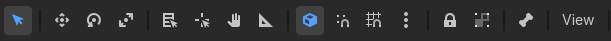
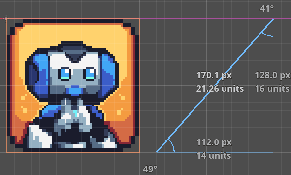
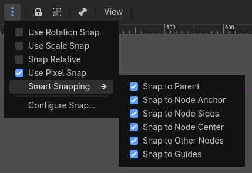
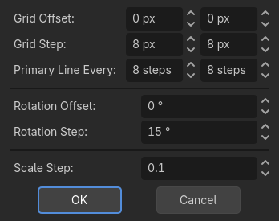
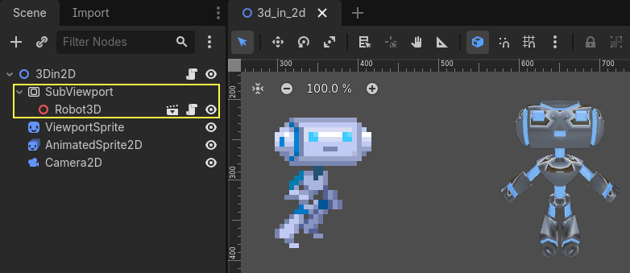

Giới thiệu về 2D
Các công cụ phát triển game 2D của Godot bao gồm một engine kết xuất 2D chuyên dụng, hệ thống vật lý và các tính năng được thiết kế riêng để tạo trải nghiệm 2D. Bạn có thể thiết kế màn chơi hiệu quả với hệ thống TileMap, tạo hoạt ảnh nhân vật bằng sprite 2D hoặc hoạt ảnh Cutout, và tận dụng chiếu sáng 2D để chiếu sáng scene một cách động. Hệ thống hạt 2D tích hợp sẵn cho phép bạn tạo các hiệu ứng hình ảnh phức tạp, và Godot cũng hỗ trợ shader tùy chỉnh để nâng cao đồ họa. Những tính năng này, kết hợp với sự dễ tiếp cận và linh hoạt của Godot, tạo nền tảng vững chắc để làm ra những game 2D hấp dẫn.

Demo 2D Platformer có sẵn trên Asset Library.
Trang này sẽ giới thiệu không gian làm việc 2D và cách để bạn làm quen với nó.
Mẹo
Nếu bạn muốn xem phần giới thiệu về 3D, hãy xem Giới thiệu về 3D.
Không gian làm việc 2D
Bạn sẽ dùng không gian làm việc 2D để làm việc với các scene 2D, thiết kế màn chơi hoặc tạo giao diện người dùng. Để chuyển sang không gian làm việc 2D, bạn có thể chọn một node 2D trong cây scene, hoặc dùng bộ chọn không gian làm việc nằm ở cạnh trên của trình chỉnh sửa:

Tương tự như 3D, bạn có thể dùng các tab bên dưới bộ chọn không gian làm việc để chuyển giữa các scene đang mở hoặc tạo scene mới bằng nút dấu cộng (+). Các dock bên trái và bên phải hẳn đã quen thuộc với bạn từ phần giới thiệu trình chỉnh sửa.
Bên dưới bộ chọn scene là thanh công cụ chính, và bên dưới thanh công cụ chính là viewport 2D.
Bạn có thể kéo thả các node tương thích từ FileSystem dock để thêm chúng vào viewport dưới dạng node. Kéo thả sẽ thêm node được kéo làm node anh em (sibling) của node đang chọn (nếu node gốc đang được chọn, nó sẽ được thêm làm node con). Giữ Shift khi thả sẽ thêm node làm node con của node đang chọn. Giữ Alt khi thả sẽ thêm node làm node con của node gốc. Nếu giữ Alt + Shift khi thả, bạn có thể chọn loại node nếu áp dụng được.
Thanh công cụ chính
Một số nút trên thanh công cụ chính giống với các nút trong không gian làm việc 3D. Một lời giải thích ngắn kèm phím tắt sẽ hiện ra nếu bạn giữ con trỏ chuột trên một nút trong một giây. Một số nút có thể có chức năng bổ sung nếu bạn nhấn thêm phím khác. Dưới đây là tóm tắt chức năng chính của từng nút cùng phím tắt mặc định, từ trái sang phải:

Chế độ chọn (Q): Cho phép chọn node trong viewport. Nhấp chuột trái vào một node trong viewport để chọn nó. Nhấp chuột trái và kéo một hình chữ nhật sẽ chọn tất cả các node nằm trong phạm vi hình chữ nhật đó khi thả chuột. Giữ Shift khi chọn sẽ thêm node vào vùng chọn. Nhấp vào một node đã chọn trong khi giữ Shift sẽ bỏ chọn node đó. Ở chế độ này, bạn có thể kéo (các) node đã chọn để di chuyển, nhấn Ctrl để tạm chuyển sang chế độ xoay, hoặc dùng các vòng tròn đỏ để co giãn. Nếu chọn nhiều node, chỉ có thể di chuyển và xoay. Ở chế độ này, phép xoay và co giãn sẽ không dùng các tùy chọn bắt dính (snapping) ngay cả khi snapping được bật.
Chế độ di chuyển (W): Bật chế độ di chuyển (hay tịnh tiến) cho các node đã chọn. Xem Viewport 2D để biết thêm chi tiết.
Chế độ xoay (E): Bật chế độ xoay cho các node đã chọn. Xem Viewport 2D để biết thêm chi tiết.
Chế độ co giãn (S): Bật chế độ co giãn và hiển thị gizmo co giãn theo cả hai trục cho (các) node đã chọn. Xem Viewport 2D để biết thêm chi tiết.
Hiển thị danh sách node có thể chọn tại vị trí nhấp: Đúng như tên gọi, tùy chọn này hiển thị danh sách các node có thể chọn tại vị trí được nhấp dưới dạng menu ngữ cảnh, nếu có nhiều hơn một node trong vùng được nhấp.
Tâm xoay: Đặt tâm xoay để xoay (các) node quanh nó. Một node mới thêm có tâm xoay mặc định tại
x: 0,y: 0, trừ một số ngoại lệ. Ví dụ, tâm xoay mặc định của Sprite2D là tâm của nó nếu thuộc tínhcenteredđược đặt làtrue. Nếu muốn thay đổi tâm xoay của một node, hãy nhấp nút này và chọn vị trí mới bằng chuột trái. Node sẽ xoay quanh điểm này. Nếu bạn chọn nhiều node, biểu tượng này sẽ thêm một tâm xoay tạm thời dùng chung cho tất cả các node đã chọn. Nhấn Shift và nhấp nút này sẽ tạo tâm xoay tại tâm của các node đã chọn. Nếu bật bất kỳ tùy chọn snap nào, tâm xoay cũng sẽ bắt dính theo chúng khi kéo.Chế độ kéo khung nhìn (G): Cho phép bạn di chuyển trong viewport mà không vô tình chọn node nào. Ở các chế độ khác, bạn cũng có thể giữ Space và kéo bằng chuột trái để làm điều tương tự.
Chế độ thước đo: Sau khi bật, nhấp vào viewport để hiển thị tọa độ x và y toàn cục hiện tại. Kéo từ vị trí này sang vị trí khác sẽ đo khoảng cách theo pixel. Nếu bạn kéo theo đường chéo, nó sẽ vẽ một tam giác và hiển thị riêng các khoảng cách theo x, y và tổng khoảng cách đến đích, kèm các góc so với các trục tính bằng độ. Phím R kích hoạt thước đo. Nếu bật snapping, nó cũng hiển thị số đo theo số ô lưới:

Dùng thước đo khi bật snapping.
Use Smart Snap: Bật/tắt bắt dính thông minh cho các chế độ di chuyển, xoay, co giãn và tâm xoay. Tùy chỉnh nó bằng menu ba chấm bên cạnh các công cụ snap.
Use Grid Snap: Bật/tắt bắt dính theo lưới cho chế độ di chuyển và co giãn, tâm xoay và thước đo. Tùy chỉnh nó bằng menu ba chấm bên cạnh các công cụ snap.
Bạn có thể tùy chỉnh cài đặt lưới để chế độ di chuyển, chế độ xoay, chế độ co giãn, thước đo và tâm xoay dùng snapping. Hãy dùng menu ba chấm cho việc này:

Use Rotation Snap: Bật/tắt bắt dính theo cài đặt góc xoay đã cấu hình.
Use Scale Snap: Bật/tắt bắt dính theo cài đặt bước co giãn đã cấu hình.
Snap Relative: Bật/tắt việc bắt dính dựa trên giá trị transform hiện tại của node đã chọn. Ví dụ, nếu lưới được đặt là 32x32 pixel và node đã chọn nằm tại
x: 1, y: 1, thì bật tùy chọn này sẽ tạm thời dịch lưới đix: 1, y: 1.Use Pixel Snap: Bật/tắt việc dùng subpixel khi bắt dính. Nếu bật, các giá trị vị trí sẽ là số nguyên; tắt sẽ cho phép di chuyển theo subpixel với giá trị thập phân. Với thuộc tính lúc chạy, hãy cân nhắc kiểm tra thuộc tính Project Settings > Rendering > 2D > Snapping cho các node Node2D, và Project Settings > GUI > General > Snap Controls to Pixels cho các node Control.
Smart Snapping: Cung cấp một tập tùy chọn để bắt dính vào các vị trí cụ thể nếu chúng được bật:
Snap to Parent: Bắt dính vào các cạnh của node cha. Ví dụ, co giãn một control node con khi bật tùy chọn này sẽ bắt dính vào biên của node cha.
Snap to Node Anchor: Bắt dính vào anchor của node. Ví dụ, nếu các anchor của một control node được đặt ở các vị trí khác nhau, bật tùy chọn này sẽ bắt dính vào các cạnh và góc của anchor.
Snap to Node Sides: Bắt dính vào các cạnh của node, chẳng hạn khi đặt tâm xoay hoặc định vị anchor.
Snap to Node Center: Bắt dính vào tâm của node, chẳng hạn khi đặt tâm xoay hoặc định vị anchor.
Snap to Other Nodes: Bắt dính vào các node khác khi di chuyển hoặc co giãn. Hữu ích để căn chỉnh các node trong trình chỉnh sửa.
Snap to Guides: Bắt dính vào các đường gióng tùy chỉnh được vẽ bằng thước ngang hoặc thước dọc. Xem thêm về thước và đường gióng ở bên dưới.

Configure Snap: Mở cửa sổ như hình trên, cung cấp một tập tham số bắt dính.
Grid Offset: Cho phép dịch lưới so với gốc tọa độ.
xvàycó thể được điều chỉnh riêng.Grid Step: Khoảng cách giữa các ô lưới tính bằng pixel.
xvàycó thể được điều chỉnh riêng.Primary Line Every: Số ô lưới ở giữa trước khi vẽ một đường vô hạn để đánh dấu đường chính.
Rotation Offset: Đặt độ lệch để dịch việc bắt dính góc xoay.
Rotation Step: Xác định bước góc bắt dính. Ví dụ, 15 nghĩa là node sẽ xoay và bắt dính theo bội số của 15 độ nếu bật rotation snap và dùng chế độ xoay.
Scale Step: Xác định hệ số tăng khi co giãn. Ví dụ, nếu là 0.1, tỉ lệ sẽ thay đổi theo từng bước 0.1 nếu bật scaling snap và dùng chế độ co giãn.
Khóa các node đã chọn (Ctrl + L). Khóa các node đã chọn, ngăn việc chọn và di chuyển chúng trong viewport. Nhấp lại nút này (hoặc dùng Ctrl + Shift + L) sẽ mở khóa các node đã chọn. Các node bị khóa chỉ có thể được chọn trong cây scene. Bạn có thể dễ dàng nhận ra chúng nhờ biểu tượng ổ khóa bên cạnh tên node trong cây scene. Nhấp vào biểu tượng ổ khóa này cũng sẽ mở khóa các node.
Nhóm các node đã chọn (Ctrl + G). Tùy chọn này cho phép chọn node gốc nếu bất kỳ node con nào được chọn. Dùng Ctrl + Shift + G để bỏ nhóm. Ngoài ra, nhấp nút bỏ nhóm trong cây scene cũng thực hiện thao tác tương tự.
Skeleton Options: Cung cấp các tùy chọn để làm việc với Skeleton2D và Bone2D.
Show Bones: Bật/tắt hiển thị xương (bone) của node đã chọn.
Make Bone2D Node(s) from Node(s): Chuyển (các) node đã chọn thành Bone2D.
Xem thêm
Để tìm hiểu thêm về Skeleton, hãy xem Hoạt ảnh cắt ghép (cutout).
Menu View: Cung cấp các tùy chọn để điều khiển khung nhìn của viewport. Vì các tùy chọn của nó phụ thuộc nhiều vào viewport, nó được trình bày trong phần Viewport 2D.
Bên cạnh menu View, có thể xuất hiện thêm một số nút khác. Trong hình thanh công cụ ở đầu chương này, có thêm nút Sprite2D vì một Sprite2D đang được chọn. Menu này cung cấp một số thao tác nhanh và công cụ để làm việc với một node hoặc vùng chọn cụ thể. Ví dụ, khi vẽ đa giác, nó cung cấp các nút để thêm, sửa hoặc xóa điểm.
Hệ tọa độ
Trong trình chỉnh sửa 2D, khác với 3D, chỉ có hai trục: x và y. Ngoài ra, góc nhìn là cố định.
Trong viewport, bạn sẽ thấy hai đường với hai màu chạy vô tận qua màn hình: màu đỏ cho trục x và màu xanh lá cho trục y. Trong Godot, hướng sang phải và xuống dưới là hướng dương. Giao điểm của hai đường này là gốc tọa độ: x: 0, y: 0.
Một node gốc sẽ có gốc tọa độ tại vị trí này khi được thêm vào. Chuyển sang chế độ move hoặc scale sau khi chọn một node sẽ hiển thị các gizmo tại vị trí offset của node. Các gizmo sẽ chỉ theo hướng dương của trục x và y. Ở chế độ di chuyển, bạn có thể kéo đường màu xanh lá để chỉ di chuyển theo trục y. Tương tự, bạn có thể giữ đường màu đỏ để chỉ di chuyển theo trục x.
Ở chế độ co giãn, các gizmo sẽ có dạng hình vuông. Bạn có thể giữ và kéo các hình vuông màu xanh lá và màu đỏ để co giãn node theo trục y hoặc x. Kéo theo hướng âm sẽ lật node theo chiều ngang hoặc chiều dọc.
Viewport 2D
Viewport sẽ là khu vực bạn dành nhiều thời gian nhất nếu định thiết kế màn chơi hoặc giao diện người dùng một cách trực quan:

Nhấp chuột giữa và kéo sẽ di chuyển khung nhìn. Các thanh cuộn ở bên phải hoặc bên dưới viewport cũng di chuyển khung nhìn. Ngoài ra, bạn có thể dùng phím G hoặc Space. Nếu bật Editor Settings > Editors > Panning > Simple Panning, bạn có thể kích hoạt việc kéo khung nhìn trực tiếp chỉ bằng Space mà không cần kéo chuột.
Viewport có các nút ở góc trên bên trái. Center View đưa (các) node đã chọn vào giữa màn hình. Hữu ích khi bạn có một scene lớn với nhiều node và muốn xem node đang chọn trong cây scene. Bên cạnh là các nút điều khiển thu phóng. - thu nhỏ, + phóng to, và nhấp vào con số phần trăm sẽ đặt lại về 100%. Ngoài ra, bạn có thể cuộn chuột giữa để phóng to (cuộn lên) và thu nhỏ (cuộn xuống).
Các thanh màu đen ở cạnh trái và cạnh trên của viewport là các thước đo. Bạn có thể dùng chúng để định hướng trong viewport. Mặc định, thước đo sẽ hiển thị tọa độ pixel của viewport, đánh số theo bước 100 pixel. Thay đổi mức thu phóng sẽ thay đổi các giá trị hiển thị. Bật Grid Snap hoặc thay đổi các tùy chọn snapping sẽ cập nhật tỉ lệ của thước và các giá trị hiển thị.
Bạn cũng có thể tạo nhiều đường gióng tùy chỉnh để hỗ trợ đo đạc hoặc căn chỉnh node theo chúng:

Nếu có ít nhất một node trong scene, bạn có thể tạo đường gióng bằng cách kéo từ thước ngang hoặc thước dọc về phía viewport. Một đường gióng màu tím sẽ xuất hiện, hiển thị vị trí của nó, và sẽ ở lại đó khi bạn thả chuột. Bạn có thể tạo đồng thời cả đường gióng ngang và dọc bằng cách kéo từ ô vuông màu xám tại giao điểm của các thước. Có thể đặt lại vị trí đường gióng bằng cách kéo chúng, và xóa chúng bằng cách kéo hẳn chúng về lại thước tương ứng.
Bạn cũng có thể bật bắt dính vào các đường gióng đã tạo bằng menu Smart Snap.
Ghi chú
Nếu bạn không thể tạo đường, hoặc không thấy các đường gióng đã tạo trước đó, hãy đảm bảo chúng đang được hiển thị bằng cách kiểm tra menu View của viewport. Mặc định, Y bật/tắt hiển thị của chúng. Đồng thời, hãy đảm bảo có ít nhất một node trong scene.
Tùy vào công cụ được chọn trên thanh công cụ, nhấp chuột trái sẽ thực hiện một thao tác chính trong viewport. Ví dụ, Select Mode sẽ chọn node được nhấp chuột trái trong viewport. Đôi khi, nhấp chuột trái có thể kết hợp với phím bổ trợ (ví dụ Ctrl hoặc Shift) để thực hiện thao tác phụ. Ví dụ, giữ Shift trong khi kéo một node ở chế độ Select hoặc Move sẽ cố gắng giữ node chỉ di chuyển theo một trục.
Nhấp chuột phải trong viewport cung cấp hai tùy chọn để tạo node hoặc tạo instance một scene tại vị trí đã chọn. Nếu có ít nhất một node được chọn, nhấp chuột phải còn cung cấp tùy chọn di chuyển (các) node đã chọn đến vị trí này.
Viewport có menu View cung cấp nhiều tùy chọn để thay đổi giao diện của viewport:
Grid: Cho phép hiển thị lưới mọi lúc, chỉ khi dùng snapping, hoặc không hiển thị. Bạn cũng có thể bật/tắt chúng bằng tùy chọn đi kèm.
Show Helpers: Bật/tắt việc hiển thị tạm thời đường viền của node với các thuộc tính transform trước đó (vị trí, tỉ lệ hoặc góc xoay) khi một thao tác transform đã bắt đầu. Với các node Control, nó còn hiển thị các tham số kích thước. Hữu ích để thấy độ chênh lệch.
Show Rulers: Bật/tắt hiển thị thước ngang và thước dọc. Xem Viewport 2D để biết thêm về thước đo.
Show Guides: Bật/tắt hiển thị các đường gióng đã tạo. Xem Viewport 2D để biết cách tạo chúng.
Show Origin: Bật/tắt hiển thị các đường gốc tọa độ màu xanh lá và màu đỏ được vẽ tại
x: 0, y: 0.Show Viewport: Bật/tắt hiển thị viewport mặc định của game, được biểu thị bằng một hình chữ nhật màu chàm. Đây cũng là kích thước cửa sổ mặc định trên các nền tảng desktop, có thể thay đổi bằng cách vào Project Settings > Display > Window > Size và đặt Viewport Width và Viewport Height.
Gizmos: Bật/tắt hiển thị các chỉ báo Position (biểu tượng chữ thập), Lock (biểu tượng ổ khóa), Groups (biểu tượng hai hình vuông) và Transformation (các đường màu xanh lá và đỏ).
Center Selection: Giống như nút Center View bên trong viewport. Đưa (các) node đã chọn vào giữa khung nhìn. Phím tắt mặc định là F.
Frame to Selection: Tương tự Center Selection, nhưng còn thay đổi mức thu phóng để nội dung vừa với màn hình. Phím tắt mặc định là Shift + F.
Clear Guides: Xóa tất cả các đường gióng khỏi màn hình. Bạn sẽ cần tạo lại chúng nếu định dùng sau này.
Preview Canvas Scale: Bật/tắt việc xem trước tỉ lệ canvas trong trình chỉnh sửa khi mức thu phóng hoặc khung nhìn của viewport thay đổi. Hữu ích để xem các control sẽ trông thế nào sau khi co giãn và di chuyển mà không cần chạy game.
Preview Theme: Cho phép chọn trong các theme có sẵn để thay đổi giao diện của các control trong trình chỉnh sửa mà không cần chạy game.
Node2D và Control node
CanvasItem là node cơ sở cho 2D. Node2D là node cơ sở cho các đối tượng game 2D, và Control là node cơ sở cho mọi thứ thuộc GUI. Với 3D, Godot dùng node Node3D.
Hiển thị node 3D trong 2D
Có thể hiển thị node 3D trong một scene 2D bằng cách dùng SubViewport. Bạn có thể xem điều này trong demo 3D in 2D Viewport.
